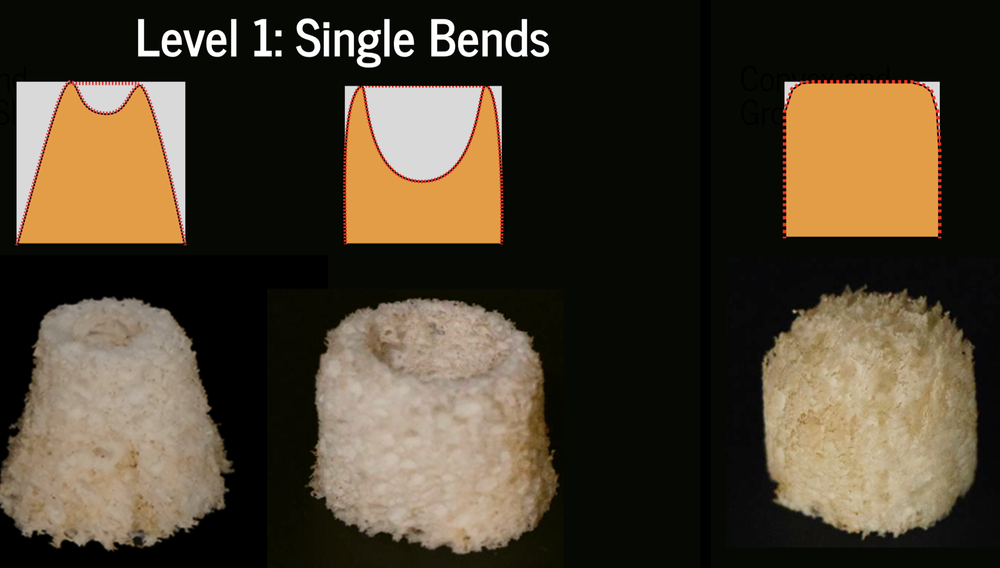
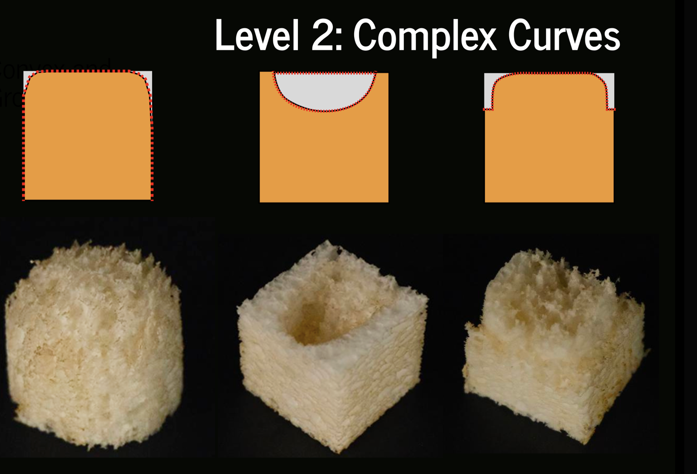
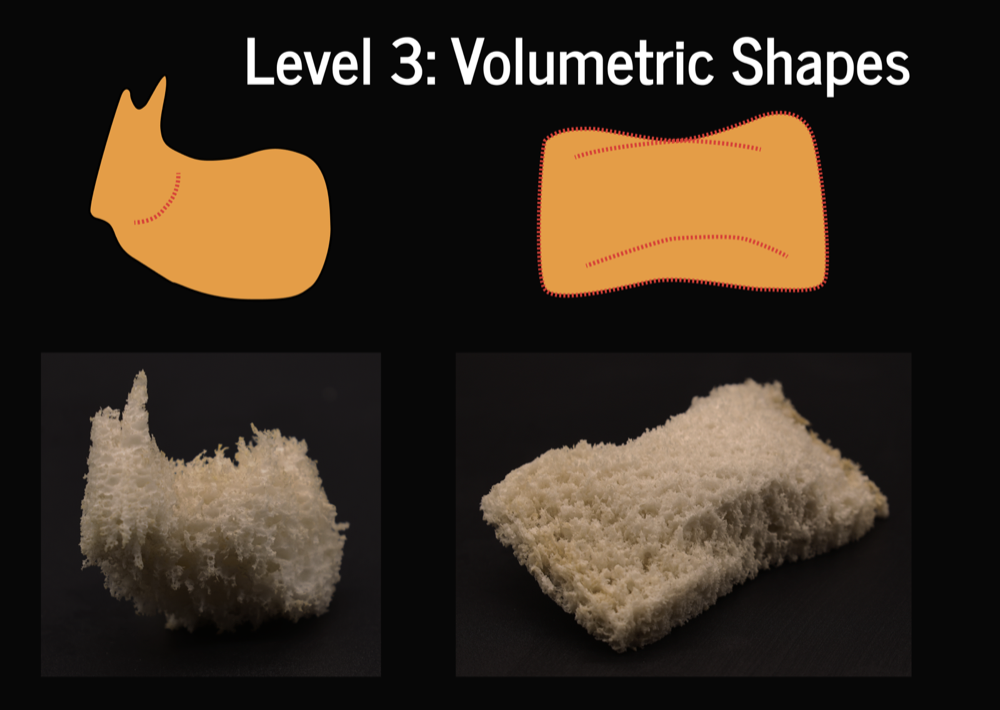
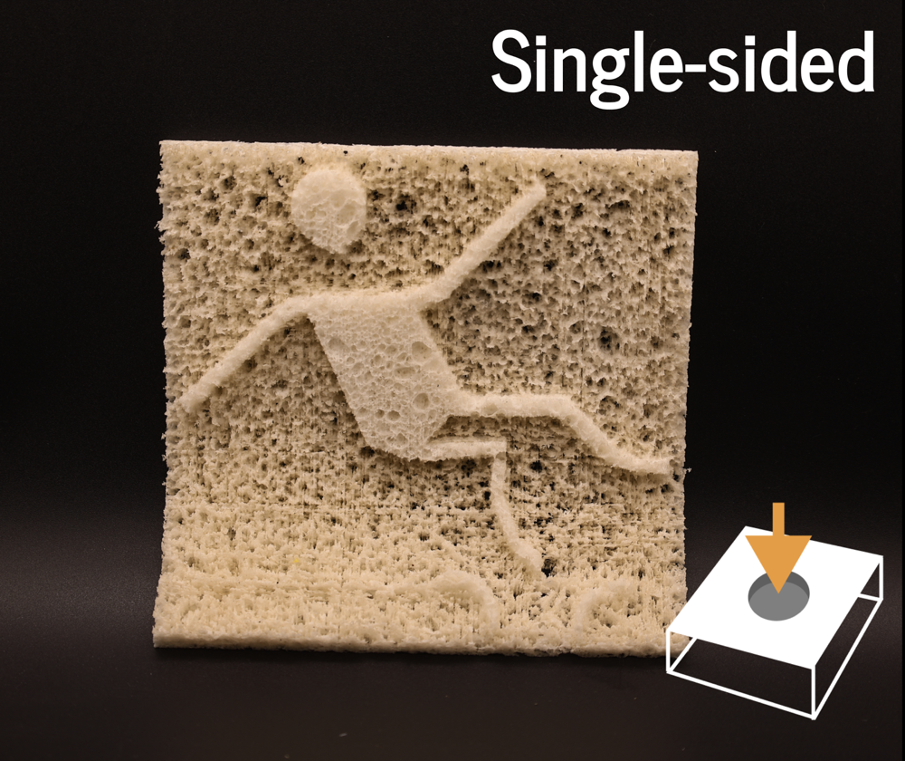
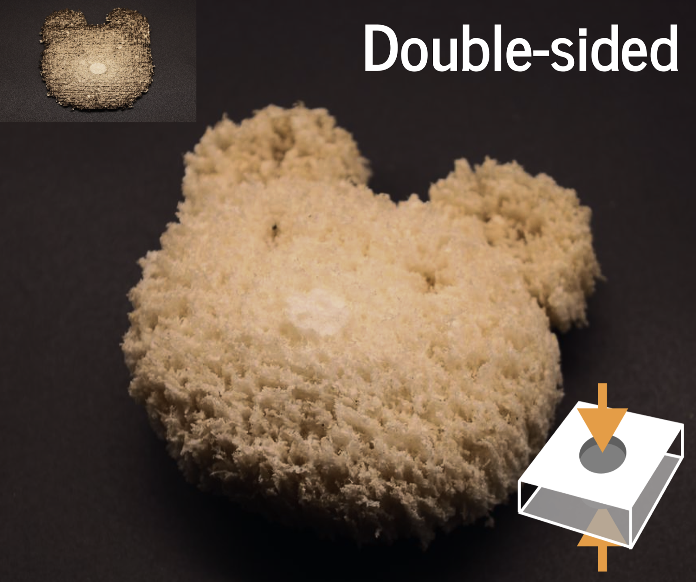
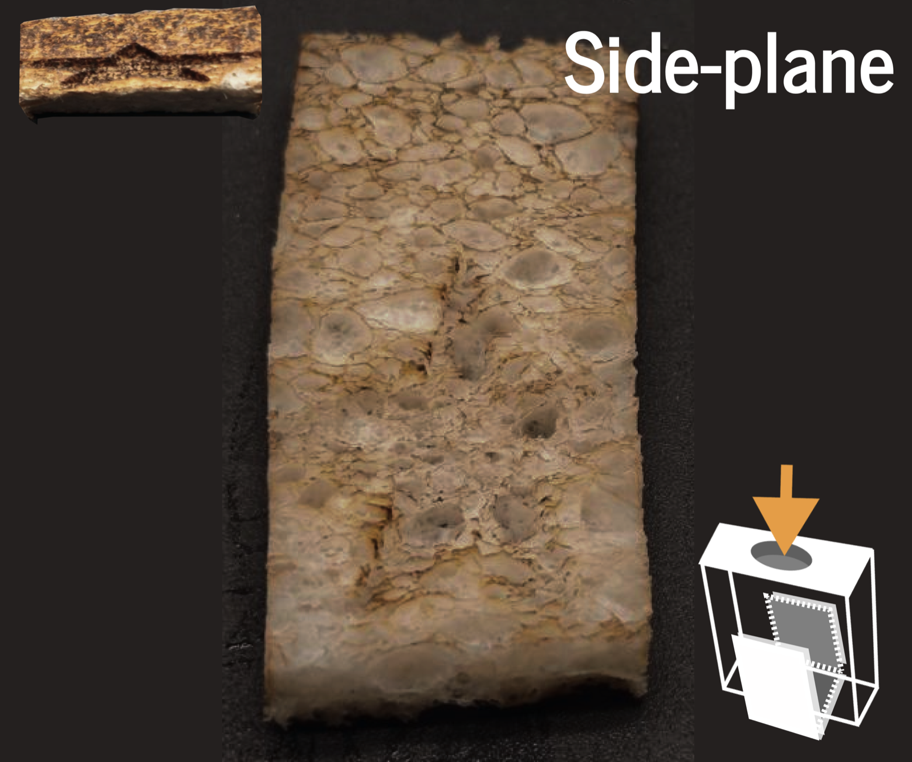
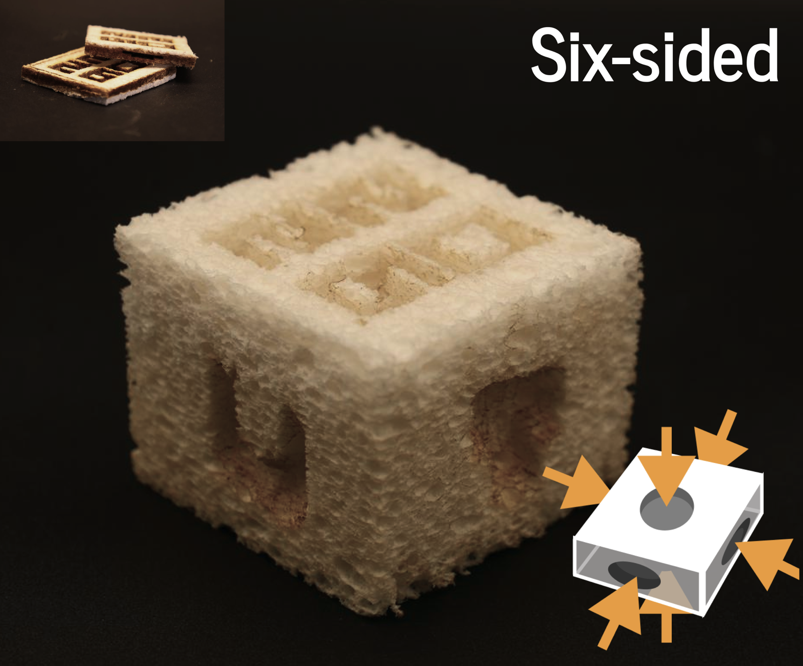
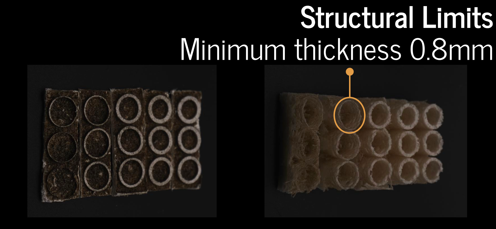
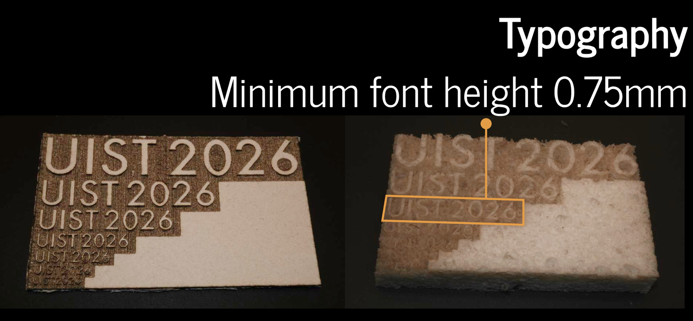

Shapes

Level 0: Surface Slopes
The Level 0: Surface Slopes section focuses on creating angled surfaces. This section allows for cutting various units with different slope angles, which can be adjusted according to design requirements. These angled surfaces can then be arranged in patterns to form unique geometries.

Level 1: Single Bends
The Level 1: Single Bends section focuses on creating shapes through surface rotation, with an emphasis on controlling single curvature surfaces. The shape is generated by rotating a surface 360 degrees around an axis, forming a rotational body.

Level 2: Complex Curves
Level 2 introduces composite curvature into the design process. While Level 1 focuses on simple single curvature, Level 2 uses a more sophisticated topology that controls both positive and negative curvature within the same surface.

Level 3: Volumetric Shapes
Level 3 focuses on creating complex 3D structures that go beyond simple shapes and curvatures. Users build their own models using design software and then import those models into the LaserMorph design tool for further processing.
Scalability

Single-sided
Single-sided carving is the most basic technique, where the design is cut on one side of the material only. This method is suitable for simpler designs and provides a straightforward approach to creating 3D shapes.

Double-sided
Double-sided carving involves cutting both the front and back faces of the material. This technique requires splitting the model into two parts and processing each side separately, suitable for creating more complex 3D shapes.

Side-plane
Side-plane carving involves cutting along the side surfaces of the material. This technique requires adjustments in the laser's parameters to handle the vertical direction, ensuring precise cutting and minimizing horizontal deformation.

Six-sided
Six-sided carving combines single-sided, double-sided, and side-plane carving techniques to cut all six faces of a material. This approach is perfect for creating fully enclosed 3D shapes by processing each side separately.

Horizontal Joining
Horizontal expansion involves creating interlocking, zigzag edges that allow different sections of the material to be joined horizontally. The design relies on puzzle-like interlocking patterns for creating larger expanded shapes.

Vertical Joining
Vertical expansion allows users to create modular, interlocking pieces with protruding and recessed features along the vertical surfaces. These features enable users to assemble larger structures by interlocking multiple parts vertically.
Resolution

Vertical Precision
The smallest stable precision achievable is a cut depth of 1.5mm. When the height difference exceeds 1.5mm, the layer structures can form clear and stable height differences, ensuring precision and reliability in the final result.

Surface Quality
Using a cross-path scanning strategy where adjacent scan paths are perpendicular to each other significantly reduces the striped structure, leading to a much smoother and more even surface quality compared to single-direction scanning.

Structural Limits
The safe wall thickness has a processing threshold limit of 0.8mm. To ensure reliable manufacturing and structural stability after moisture-induced expansion, the wall thickness should be set to 0.8mm or higher.

Typography
Typography refers to the minimum text size and readability achievable through the laser cutting process. 1.0cm diameter text is ideal for display, while 0.75cm text can still be recognized, but any smaller text becomes unreadable.
Morphing

Morphing
Designers can control the lifecycle of the material through four triggering factors: Water Absorption, Sealing, Dehydration, and Compression. These factors enable flexibility, reusability, and dynamic interaction across various design cycles.